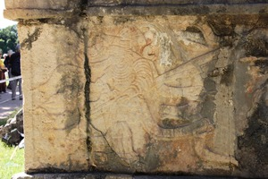

Chichén-Itzá
Home
Facts
Gallery
Some Fact About the Historic Site
People travel for the beach experience, ruins, and the nightlife venues.
Chichén-Itzá is most popular, followed by the smaller Temple of Tulum.

There are also 4 naturally formed sinkholes. The Cenote Sagrado, or
’Sacred Cenote’
is 60ft wide with 29ft sheer cliff faces down to the water.
The Temple of Kukulkan has a steep stairway that, during the equinox, creates the illusion of a snake crawling up the stairs at noon
Popularity of the site has been increasing over the last decade with numbers reaching 2.7 million in 2018.
This is a video from National Geographic that shows the user Chichén-Itzá.
This is taken from youtube for your viewing pleasure.